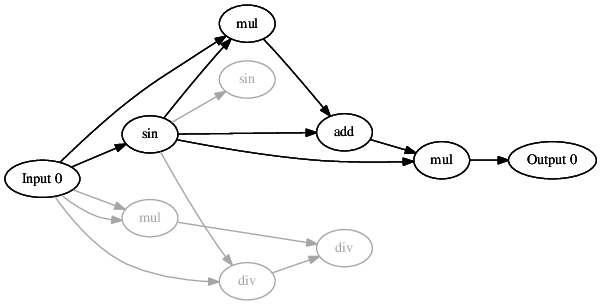
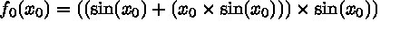

This tutorial introduces the many ways in which CGP chromosomes can be visualised using the CGP library.
It is often important to be able to visualise evolved solutions in order to gain insight into how they are operating. The CGP library provides many ways to visualise evolved solution each of which is now introduced.
| Visualisation | This tutorial introduces the many ways in which CGP chromosomes can be visualised using the CGP library. |
| The Program | A simple program which visualises the same chromosome multiple ways. |
| Stepping Through the Code | A close look at each line of the example code. |
A simple program which visualises the same chromosome multiple ways.
The program below is provided in the CGP-Library download within /examples/visualization.c and is included in the code:blocks project.
#include <stdio.h>
#include "../src/cgp.h"
int main(void){
struct parameters *params = NULL;
struct chromosome *chromo = NULL;
int numInputs = 1;
int numNodes = 8;
int numOutputs = 1;
int nodeArity = 2;
params = initialiseParameters(numInputs, numNodes, numOutputs, nodeArity);
addNodeFunction(params, "add,sub,mul,div,sin");
chromo = initialiseChromosome(params);
printChromosome(chromo, 0);
saveChromosomeDot(chromo, 0, "chromo.dot");
saveChromosomeLatex(chromo, 0, "chromo.tex");
freeChromosome(chromo);
freeParameters(params);
return 0;
}A close look at each line of the example code.
First cgp.h must be included to use the CGP-Library. The cgp.h is located in the /src directory.
#include "../src/cgp.h"
A parameters and chromosome structure will be used.
struct parameters *params = NULL; struct chromosome *chromo = NULL;
The size of the created chromosome will be specified.
int numInputs = 1; int numNodes = 8; int numOutputs = 1; int nodeArity = 2;
The parameters structure is initialised and the function set is populated.
params = initialiseParameters(numInputs, numNodes, numOutputs, nodeArity); addNodeFunction(params, "add,sub,mul,div,sin");
A new chromosome is initialised using the specified parameters. This is the chromosome which will be visualised multiple ways.
chromo = initialiseChromosome(params);
The function printChromosome can be used to display the given chromosome in the terminal / command prompt. As this function has been explained previously in Getting Started it is not re-explained here.
printChromosome(chromo, 0);
The output of printChromosome is given below; which can be compared to the other visualisation methods discussed.
(0): input (1): sin 0 * (2): mul 0 0 (3): mul 0 1 * (4): add 1 3 * (5): div 1 0 (6): div 2 5 (7): sin 1 (8): mul 4 1 * outputs: 8
The next method saveChromosomeDot is used to visualise chromosomes in a graph structure. The actual plotting of the graph is done using the free, cross platform, open source graphviz tool (http://www.graphviz.org). Graphviz must first be installed in order to use it to plot the CGP chromosomes. The function saveChromosomeDot produces a .dot graphviz file of the given chromosome. This .dot file can be used by graphviz to create an image of the chromosome.
saveChromosomeDot(chromo, 0, "chromo.dot");
To use graphviz to plot the .dot file the following commend can be used
dot -Tpdf chromo.dot -o chromo.pdf
This results in an image such as below
The final method for visualising CGP chromosomes produces the mathematical equation which describes the given chromosome. The actual formatting of the equation is done using the free, cross platform, open source typesetting system, LaTeX (http://www.latex-project.org/). LaTeX must first be installed in order to use it to produce the chromosome as an equation. The saveChromosomeLatex function produces a .tex LaTeX file of the given chromosome. This .tex file can be used by LaTeX to create an equation of the chromosome. (This method is currently limited to feed-forward/acyclic CGP not Recurrent CGP.)
saveChromosomeLatex(chromo, 0, "chromo.tex");
To use LaTeX to produce the equation form the .tex file the following commend can be used
pdflatex chromo.tex
This results in an equation such as below
Finally all initialised CGP library structures should be free’d
freeChromosome(chromo); freeParameters(params);
And that’s it, the CGP library provides three easy to use visualisation tools for inspecting evolved solutions. Additionally the files produced using saveChromosome are easily parsible and could be used by other visualisation tools.
Stores general evolutionary and chromosome parameters used by the CGP-Library.
struct parameters
Stores a CGP chromosome instances used by the CGP-Library.
struct chromosome
Displays the given chromosome to the terminal / command prompt in a human readable format.
DLL_EXPORT void printChromosome( struct chromosome * chromo, int weights )
Saves the given chromosome to a graphviz .dot file.
DLL_EXPORT void saveChromosomeDot( struct chromosome * chromo, int weights, char const * fileName )
Saves the given chromosome to a latex .tex file for visulisation and inclusion in written workes.
DLL_EXPORT void saveChromosomeLatex( struct chromosome * chromo, int weights, char const * fileName )
Saves the given chromosome to a file which can used to initialise new chromosomes.
DLL_EXPORT void saveChromosome( struct chromosome * chromo, char const * fileName )